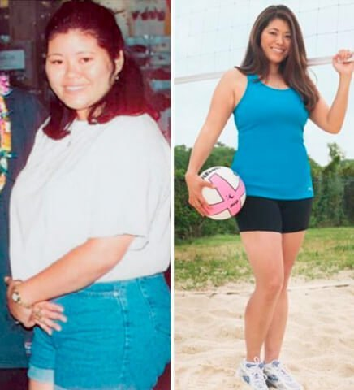
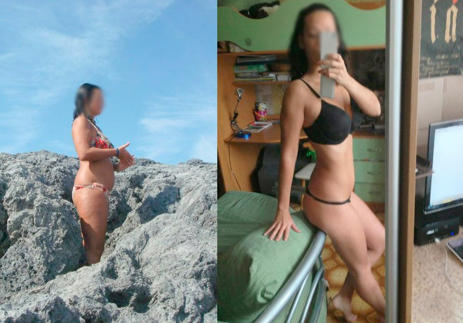
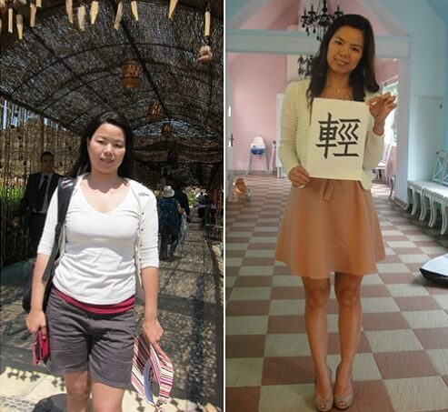

กรมสุขภาพนานาชาติ: สูตรการรักษานวัตกรรมใหม่เพื่อการลดน้ำหนัก ลด 15 กก.ใน 4 สัปดาห์โดยไม่ใช้สารเคมี ไม่ต้องอดอาหาร ไม่ต้องออกกำลังกาย
แพทย์ผู้เชี่ยวชาญเฉพาะสาขา นายแพทย์เจตพล พิทักษ์สถาพร
การอดอาหาร การออกกำลังกาย การดูดไขมัน เหล่านี้เป็นวิธีหลักที่ใช้กำจัดน้ำหนักส่วนเกิน อย่างไรก็ตาม เมื่อพิจารณาจากจำนวนของผู้ที่เป็นโรคอ้วนที่ยังคงเพิ่มขึ้นอย่างต่อเนื่องนั้น วิธีที่กล่าวมาข้างต้นคงไม่สามารถเรียกได้ว่าได้รับความนิยมหรือมีประสิทธิภาพดีสักเท่าใดนัก
Omegaslim ได้กลายเป็น ผู้พลิกวงการ สูตรการรักษาที่ช่วยกระตุ้นการลดน้ำหนักอย่างเป็นธรรมชาติ
นายแพทย์เจตพล พิทักษ์สถาพร
ผู้อำนวยการศูนย์การแพทย์เชิงวิทยาศาสตร์แห่งชาติ แพทยศาสตรบัณฑิต อายุรแพทย์ นักโภชนาการ
ประสบการณ์ในสายอาชีพ 27 ปี
Omegaslim คืออะไร?
หากร่างกายของคุณขาดวิตามิน A คุณสามารถรับประทานส้มได้ หากร่างกายคุณขาดฟอสฟอรัส คุณสามารถรับประทานปลาได้ หากร่างกายคุณขาดวิตามิน C คุณสามารถรับประทานแบล็คเคอแรนต์ได้ เฉพาะ Omegaslim เท่านั้นที่มีสารอาหารรองซึ่งสามารถเร่งให้เกิดการเผาผลาญมวลไขมันในร่างกายของมนุษย์ โดยเฉพาะ บี-แครอทีนซึ่งเป็นสารต้านอนุมูลอิสระที่ยอดเยี่ยม ที่ไม่เพียงแต่สามารถช่วยเผาผลาญไขมันได้เท่านั้น แต่ยังสามารถช่วยปรับระบบการทำงานของร่างกายทั้งหมดได้อีกด้วย
Omegaslim ได้รับการทดสอบทางคลินิกแล้วว่าสามารถช่วยกระตุ้นระบบเมตาบอลิซึมได้ ฟื้นฟูการทำงานของระบบต่อมไร้ท่อ กระตุ้นการสร้างเนื้อเยื่อและลดความอยากอาหารได้ ผลิตภัณฑ์นี้เป็นออร์แกนิก 100% และสามารถช่วยกระตุ้นกระบวนการทำงานในร่างกายของมนุษย์ได้ ไม่จำเป็นต้องอดอาหารอย่างเข้มงวดเนื่องจากกระบวนการของระบบเมตาบอลิซึมทำงานได้ดีและเผาผลาญมวลไขมันได้ การรับประทานอาหารที่สมดุลสามารถส่งผลอย่างเพียงพอในการรักษาระดับการเผาผลาญของร่างกาย การออกกำลังกายที่หนักหน่วงก็ไม่จำเป็นด้วยเช่นเดียวกัน เพียงแค่ออกกำลังกายด้วยการยืดกล้ามเนื้อตามธรรมดาก็เพียงพอ
คุณสมบัติหลักของ Omegaslim:
- เผาผลาญไขมัน
- ลดความอยากอาหาร
- ปรับระบบต่อมไร้ท่อให้เป็นปกติ
- ฟื้นฟูร่างกายและขับสารพิษออกจากร่างกาย
- ปรับปรุงรูปร่างให้สมส่วนด้วยการเผาผลาญมวลไขมัน
เนื่องจากมีระบบเมตาบอลิซึมที่เข้มข้น ไขมันใต้ผิวหนังในบริเวณที่มีปัญหาของคนที่ใช้ Omegaslim ก็จะถูกเผาผลาญได้ด้วยความเร็วถึง 0.5 กิโลกรัมต่อวัน! Omegaslim มีประสิทธิภาพสูงมาก แม้แต่ในเคสที่เกิดปัญหาน้ำหนักตัวเกินเนื่องมาจากความผิดปกติของฮอร์โมน หากคุณมีแนวโน้มเป็นโรคอ้วนแล้ว ผลิตภัณฑ์นี้คือคำตอบที่คุณต้องการ!
อาหารเสริมนี้มีจำหน่ายในประเทศไทยเมื่อไม่นานมานี้ แต่ได้รับการพิสูจน์แล้วว่าเป็นตัวเลือกที่ได้รับความนิยมเป็นอย่างมากในหมู่นักเพาะกายและครูฝึกเนื่องจาก มันช่วยกระตุ้นการลดน้ำหนักให้เร็วขึ้น และ รักษาสัดส่วนของไขมันให้อยู่ในระดับต่ำ ในร่างกายได้
ผลลัพธ์หลังจากการใช้ Omegaslim เป็นเวลา 30 วัน
ผลลัพธ์หลังจากการใช้ Omegaslim เป็นเวลา 15 วัน
ผลลัพธ์หลังจากการใช้ Omegaslim เป็นเวลา 22 วัน
ผลลัพธ์หลังจากการใช้ Omegaslim เป็นเวลา 18 วัน
ความคิดเห็นของนักวิจัย:
นายแพทย์เป็นหนึ่ง เพิ่มสถาพร
นักโภชนาการ
ประสบการณ์ในสายงาน 42 ปี
"สิ่งที่สำคัญที่สุดในกระบวนการลดน้ำหนักนั้นไม่ใช่การทำลายระบบร่างกายของตัวเอง วิธีลดน้ำหนักที่ได้รับความนิยมส่วนใหญ่จะเป็นแบบนั้น ซึ่งมันเป็นไปไม่ได้หรอกครับที่คนเราจะควบคุมอาหารได้ตลอดเวลา นอกจากนี้สำหรับหลาย ๆ คนแล้วการควบคุมอาหารเป็นเรื่องที่ค่อนข้างยากมากเลยทีเดียว พอไม่เห็นผลลัพธ์ก็มักจะหันไปพึ่งยาเม็ด แต่ยาเหล่านี้จะเพียงแค่กดระบบเอาไว้ทำให้เกิดความผิดปกติของฮอร์โมนได้และอาจลามไปถึงการทำลายระบบภูมิคุ้มกันและตับอีกด้วย การลดน้ำหนักควรเป็นไปอย่างธรรมชาติและไม่ทำร้ายระบบภายในร่างกายของคุณอย่างเด็ดขาด ในปัจจุบันนี้ Omegaslim เป็นเพียงสูตรเดียวเท่านั้นที่สามารถทำได้ สารอาหารรองออกฤทธิ์ของ Omegaslim นี้ช่วยเร่งระบบเมตาบอลิซึมและการเผาผลาญมวลไขมัน ผมแน่ใจว่าสูตรนี้ดีที่สุดแล้วที่วิทยาศาสตร์โภชนาการสมัยใหม่มีอยู่ในตอนนี้ เป็นผลิตภัณฑ์ที่ได้รับการรับรองแล้ว สามารถวางใจได้ในประสิทธิภาพครับ"
แพทย์หญิงวัลย์วิภา เอี่ยมภัทรพิบูลย์
นักโภชนาการ
ประสบการณ์ในสายอาชีพ 18 ปี
"ดิฉันได้เห็นผู้หญิงมากมายที่ประสบปัญหา พวกเธอลองทุกวิถีทางโดยไม่ได้รับผลอะไร หรือกลับมามีน้ำหนักเท่าเดิมกับที่เพิ่งลดไป ดิฉันเคยแนะนำให้พวกเธอตั้งสติและลองใหม่อีกครั้ง แต่ตอนนี้ดิฉันจะแนะนำทางเลือกที่ดีกว่านั้น นั่นก็คือ Omegaslim ซึ่งสามารถนำมาใช้เป็นอาหารเสริมได้ ช่วยลดน้ำหนักได้ถึง 15 กก.อย่างเป็นธรรมชาติในเดือนเดียว นี่เป็นสูตรออร์แกนิกค่ะ ทุกคนสามารถใช้ได้ ไม่ว่าจะเพศไหน อายุเท่าไร ใช้ได้ทุกคนค่ะ การลดน้ำหนักได้ผลสมบูรณ์เนื่องมาจากการเผาผลาญไขมัน ไม่ใช่จากการขับน้ำออกจากร่างกาย ผลลัพธ์ในบริเวณที่เป็นปัญหานั้นจะสามารถมองเห็นได้ในระยะเวลาเพียงสัปดาห์เดียวเท่านั้น มีการนำ Omegaslim มาใช้ในระบบโภชนาการของอเมริกามาสักพักหนึ่งแล้วค่ะ และกำลังได้รับความนิยมเป็นอย่างมากในประเทศไทยด้วย ดิฉันแนะนำให้คนไข้ใช้ทุกคน และก็ยังไม่มีใครมีปัญหาในการใช้เลยสักคนเดียวค่ะ"
การสนับสนุนของกรมสุขภาพนานาชาติได้วิจัยไว้ว่า ผลลัพธ์ออกมาเกินคาดหวังทั้งหมด:
กรมสุขภาพนานาชาติได้ทําการจัดสํารวจ: คุณลดนำ้หนักได้อย่างไร?
23%
47%
8%
17%
5%
สำคัญ! มีรายงานเพิ่มเติมด้วยว่า ฤดูหนาวเป็นช่วงที่เหมาะแก่การเริ่มต้นลดน้ำหนักมากที่สุด การลดลงของอุณหภูมิทำให้ระบบเมตาบอลิซึมและการหมุนเวียนเลือดนั้นมีความเข้มข้นมากขึ้น ดังนั้น การเพิ่มเลือดและออกซิเจนต่อร่างกายจะยิ่งเพิ่มผลลัพธ์ของการใช้สูตรการรักษานี้ให้ดีมากยิ่งขึ้น น้ำหนักส่วนเกินจะลดลงเร็วขึ้น 47% เมื่อเทียบกับช่วงที่มีอุณหภูมิสูงกว่านี้ ระบบการทำงานของร่างกายจะกลับมาเหมือนเดิม 100% ในระยะการรักษาดูแลนี้
การวิจัย
ผลลัพธ์ของ Omegaslim จากการทดสอบในห้องทดลอง โดสถาบันวิจัยของกรมสุขภาพนานาชาติ:
การศึกษาตามแผนเกี่ยวกับประชากร (100 คน) ที่มีน้ำหนักเกินซึ่งใช้ Omegaslim เป็นอาหารเสริมทุกวันเป็นเวลาหนึ่งเดือนโดยไม่มีการเปลี่ยนการรับประทานอาหารแต่อย่างใด เกิดผลลัพธ์ดังต่อไปนี้ในระหว่างการทดลอง:
1. มวลไขมันลดลงปริมาณระหว่าง 10 ถึง 15 กก.
ลด 15 กก. จำนวน 95%
ลด 13 กก. จำนวน 100%
*จุดประสงค์ของการทดสอบการลดน้ำหนักนี้หมายถึงการลดลงของมวลไขมัน และไม่มีสัญญาณของน้ำหนักที่กลับมาภายในระยะเวลา 1 เดือน
2. ระบบเมตาบอลิซึมมีการปรับปรุงดีขึ้นอย่างชัดเจน
3. ร่างกายสมส่วนและมีกิจกรรมทางกายภาพมากขึ้น
4. ตับและระบบต่อมไร้ท่อมีการทำงานที่ดีขึ้น
Omegaslim
ได้รับการพิสูจน์แล้วว่าสามารถเพิ่มระบบเมตาบอลิซึมและการเผาผลาญไขมันได้อย่างมีประสิทธิภาพ
แนะนำสำหรับผู้ที่มีน้ำหนักเกิน ประสบปัญหาความผิดปกติของระบบเมตาบอลิซึม และ/หรือ
โรคเบาหวาน
โปรดทราบ! ระวังของปลอม! ในเมือง และในประเทศไทย Omegaslim สามารถหาซื้อได้ใน เว็บไซต์ทางการของผู้ผลิตเท่านั้น!
คุณเบลล์ ที่สำคัญที่ห้ามลืมคือ อย่าใช้มากเกินไปครับ มันอาจทำให้คุณเบลล์ลด 20 กก.แทนก็ได้ครับ ระวังด้วย
ด้วยความเคารพ, เจตพล
เราเคยลอง Omegaslim ค่ะ ถ้าใช้ถูกวิธีมันก็ให้ผลดีมาก ๆ เราใช้ตามที่ระบุไว้เลย และนี่ผลลัพธ์ที่ได้ค่ะ 

เราใช้วีคเดียว ยังไม่ได้รู้ว่าผลระยะยาวจะเป็นยังไงนะคะ แต่ตอนเนี้ยลดไปละ 3 กิโล อาทิตย์เดียวเองนะ ยังอยากลดอีกสัก 17 กก.จะดีมาก! คิดว่าน่าจะทำได้นะ! สู้โว้ยย! :)
คุณนาถลดาครับ คุณอาจอ่านคำแนะนำการใช้คลาดเคลื่อนไปก็ได้ครับ ลองอ่านคำแนะนำการใช้อีกครั้งและทำตามอย่างเคร่งครัด ผลลัพธ์ที่ได้น่าจะดีขึ้น
ด้วยความเคารพ, เจตพล
หวัดดีค่า ใช้ Omegaslim อีกคน แต่ลดไป 11 กก.ในเดือนเดียวค่ะ ผ่านไปปีนึงน้ำหนักก็เท่าเดิมนะ นี่รูปค่ะ:

ลดได้ผลเหมือนกันค่ะ ขอให้ทุกคนลดได้เหมือนกันนะ จะเอาใจช่วยจ้าาา

ตอนที่เริ่มใช้ Omegaslim นี่ก็ยังกินทุกอย่างเหมือนเดิมค่ะแต่ลดได้ 16 กก. ที่เคยลองมาทั้งหมดนี่คิดว่า Omegaslim คือเวิร์คสุดละ ไม่ต้องเข้าฟิตเนสด้วย เหมาะกับเรามากเพราะทำงานยุ่งและเหนื่อยมากแล้ว คนที่เป็นแบบเราคือเหมาะมากค่ะ แนะนำสุดตัว! นี่ผลที่เราได้นะ:

ก่อนใช้ Omegaslim ผมหนัก 90 กก. ตอนวัยรุ่นผมไม่อ้วนนะ แต่พอเริ่มอายุมากขึ้นก็เริ่มมีพุง ตัวก็เริ่มใหญ่ขึ้น ตอนอายุ 35 นี่ชัดเจนมากว่าต้องเปลี่ยนแปลงตัวเองละ ใช้เวลาปีนึงเต็ม ๆ ครับในการออกกำลังกายแต่ก็ไม่ได้ผล ยังอ้วนเหมือนเดิม เลยลองใช้ Omegaslim ปรากฏว่าได้รูปร่างเดิมเลยภายในเวลาไม่กี่อาทิตย์เอง ตอนนี้ผมก็คอยระวังเรื่องน้ำหนักและก็มี Omegaslim ติดบ้านเผื่อไว้ตลอดครับ

Omegaslim นี่ถือเป็นผู้ช่วยชีวิตเลยค่ะ หลายปีที่แล้วฉันประสบอุบัติเหตุทางรถยนต์ก็เดินไม่ได้ ขยับไม่ได้เลย 8 เดือนเต็ม ๆ น้ำหนักเพิ่มมา 35 กก.ใน 8 เดือนนั้น! พอเริ่มเดินได้ก็ต้องใช้ไม้เท้า ออกกำลังกายอะไรก็ยังไม่ได้เพราะร่างกายยังอ่อนแอมาก น้ำหนักที่เกินมาก็เป็นปัญหาอีกได้ลอง Omegaslim เป็นครั้งแรกจากเพื่อนที่อินเดียซื้อมาฝาก ก็ลองใช้แล้วชอบผลที่ได้เลยฝากซื้อเพิ่มมาอีก เอาจริง ๆ ก็ไม่ได้หวังอะไรมากหรอกนะคะแต่ก็อยากลองดู กิน Omegaslim วันละ 3 ครั้ง เห็นผลในอาทิตย์แรกเลย คือก็ไม่ถึงกับลดได้หลายกิโลหรอกค่ะแต่มันมีความรู้สึกว่าร่างกายดีขึ้น ผ่านไป 2 อาทิตย์น้ำหนักลดไป 4 กก.ทั้งที่การใช้ชีวิตทุกอย่างยังเหมือนเดิม พอครบ 3 เดือนน้ำหนักก็ลดไปทั้งหมด 28 กก. แฮปปี้มากค่ะ รู้สึกโชคดีมากที่เพื่อนแนะนำให้รู้จัก Omegaslim ไม่งั้นก็ไม่รู้เหมือนกันว่าตัวเองจะเป็นยังไงตอนนี้ บางทีอาจจะยังหนัก 90 กก.อยู่เหมือนเดิมก็ได้ค่ะ
ดิฉันไม่ทราบเกี่ยวกับคนอื่น ๆ นะ แต่ Omegaslim ดีสำหรับดิฉันมาก ๆ ค่ะ ลดไปได้ 17 กก.ในหนึ่งเดือนครึ่ง จะลดเพิ่มกว่านี้อีกนิดหน่อยค่ะ ;)

ลองพยายามหยุดกินดูหรือยังคะ? ตอนเป็นเด็กก็กินได้หมดทุกอย่างล่ะนะ แต่พอโตมาแล้วจะทำเหมือนเดิมก็ไม่ได้สิ คือควบคุมตัวเองให้กินน้อยลงไม่ได้กันหรอคะ หรือยังไง?
คุณรุจิราครับ บางคนมีปัญหาความผิดปกติทางกรรมพันธุ์ในโรคอ้วนครับ ไม่ว่าจะลดอาหารยังไงก็ช่วยไม่ได้ในเรื่องนี้ ถ้าคุณรุจิราไม่มีปัญหาเรื่องโรคอ้วนถือว่าโชคดีแล้วครับ แต่ไม่ใช่ทุกคนที่จะโชคดีเหมือนคุณรุจิรานะ
ด้วยความเคารพ, เจตพล
คุณรุจิราคะ เอมก็เคยทำนะแบบว่าแทบจะไม่กินอะไรเลยแต่น้ำหนักก็ไม่ลดลง ไม่มีอะไรช่วยได้เลยจริง ๆ

แปลกใจที่เขียนถึง Omegaslim ที่เป็นที่รู้จักในกลุ่มนักโภชนาการเท่านั้น ของแอนใช้มา 2 ปีแล้วค่ะ ตอนแรกคือใช้เพื่อลดน้ำหนัก ก็ลดไป 14 กก. หลังจากนั้นก็ยังกินมาต่อเนื่องเพื่อป้องกันโอกาสการกลับมาอ้วนซ้ำและใช้เป็นวิตามินเสริมค่ะ เพื่อน ๆ ของแอนก็รู้จักมานานมากแล้วนะ ไม่ได้เป็นความลับอะไรขนาดนั้นเลย นี่ค่ะรูปแอนก่อนและหลังใช้
ทำไมทุกคนต้อง ' เหมือนกันหมด' ด้วยล่ะคะ? ทำไมทุกคนต้องผอมอ่ะ? อย่างเราเองหนัก 63 กก.สูง 165 ซม.แต่แฮปปี้กับตัวเองมากนะ ชอบที่เป็นแบบนี้และไม่เห็นอยากจะผอมลงเลย
คุณไอลดาครับ เทรนด์แฟชั่นและค่านิยมต่าง ๆ ในศตวรรษที่ 21 นี้ทำให้ผู้หญิงพยายามทำทุกอย่างเพื่อให้ดูเหมือนนางแบบ ซึ่งบ่อยครั้งที่การทำเช่นนี้ส่งผลต่อสุขภาพของพวกเธอ เราจึงสร้างสูตรการรักษาที่สามารถช่วยลดน้ำหนักได้โดยไม่ส่งผลต่อสุขภาพขึ้นมาครับ
ด้วยความเคารพ, เจตพล
เราอยู่ในตัวเมือง เพิ่งสั่งซื้อไป ตอนนี้กำลังรอให้ของมาส่งค่ะ :)

ตอนนี้อยากลดน้ำหนัก 8 กิโลด่วนนน!!!! อยู่กับบ้านมาตลอดและไม่ได้สังเกตเลยว่าน้ำหนักมันขึ้นมาตั้งแต่ตอนไหน ทำยังไงดี?? ลดอาหารไม่ได้แน่ ๆ ทำไปแป๊บ ๆ ต้องตบะแตกแน่นอนแถมจะกินเยอะกว่าเดิมอีกแน่ ไปฟิตเนสก็ไม่ได้ ทำไงดี ๆ ๆ ๆ ๆ
คุณกาญจนาครับ คุณลองขยับร่างกายทำกิจกรรมอยู่กับบ้านก็ได้ครับ แล้วใช้ Omegaslim ช่วยด้วย น่าจะได้ผลดีอย่างที่คุณกาญจนาต้องการครับ
ด้วยความเคารพ, เจตพล
เว็บไซต์ทางการของผู้ผลิต เป็นที่เดียวที่สามารถสั่งซื้อ Omeega slim ในประเทศไทยหรอคะ หรือว่าสามารถสั่งซื้อในร้านค้าออนไลน์ที่อื่นได้อีกมั้ย?
คุณนนทกานต์ครับ ไม่ได้ครับ มีร้านค้าทางการเพียงร้านเดียวเท่านั้น ไม่มีวางขายตามร้านขายยาเพราะจะมีการบวกราคาเพิ่มมากเกินไป เราไม่ได้อยากให้ยาของเราแพงขนาดนั้น ก็เลยขายทางออนไลน์แทนเพื่อจะได้ลดต้นทุนลงครับ
ด้วยความเคารพ, เจตพล

คุณมัณฑนาครับ ผมขออนุญาตแนะนำให้คุณใช้เป็นคอร์สไปเพราะจะเห็นผลที่ชัดเจนมากกว่า สำคัญมากที่จะต้องมีสุขภาพที่ดีนะครับ
ด้วยความเคารพ, เจตพล

ตอนนี้หนัก 102 กก. ไม่รู้จะลดยังไงดี อ้วนมากเลยยยย TT_TT ช่วยหน่อยค่าาา ซื้อ Omegaslim ที่ร้านขายยาได้มั้ยยยย???
คุณอลินทร์คะ ลองหาดูก็ได้นะแต่เรา เจอ Omegaslim จากเว็บของผู้ผลิตอย่างเดียวเลยนะคะ สั่งในเว็บก็สะดวกดีเหมือนกันนะ
คุณอลินทร์ครับ อันดับแรกเลยคือหยุดกังวลก่อน ในร้านขายยาไม่มียาตัวนี้ครับ เพราะเหตุผลตามที่ผมได้อธิบายไปด้านบน คุณอลินทร์สั่งซื้อจากเว็บไซต์ได้และเริ่มใช้ตามคำแนะนำเลย ย้ำอีกครั้งว่าทำตามคำแนะนำอย่างเคร่งครัดครับ แล้วจะได้ผลอย่างที่ต้องการแน่นอน
ด้วยความเคารพ, เจตพล
พิมเป็นแม่ลูกสองค่ะ พยายามลดน้ำหนักมาหลายวิธีละ ไดเอ็ตทำไม่ได้ต่อเนื่องค่ะ สองสามวันก็กลับมากินเหมือนเดิม แถมมากกว่าเดิมซะอีก และด้วยความที่ลูกสอง เรื่องออกกำลังกายคือเลิกคิดไปได้เลย นี่มาอ่านบทความแล้วสนใจมากแต่ไม่รู้ว่าจะกินยังไง (กินรวมกับอาหารอื่นหรือกินเปล่า ๆ ได้เลย?) มีคำแนะนำข้างขวดมั้ยคะ? แล้วถ้าหยุดใช้กระทันหันล่ะจะอันตรายมั้ย? ใครก็ได้ช่วยตอบให้ด้วยนะคะหรือชี้เป้าให้ไปอ่านเพิ่มก็ได้ อยากรู้จริง ๆ ค่ะสนใจมาก ๆ ขอบคุณนะคะ
สวัสดีค่ะ ดิฉันอายุ 50 แล้ว อยากลดน้ำหนักมาก รู้สึกว่ามันยากด้วยอายุขนาดนี้แล้วแต่พยายามอยู่ ตัดสินใจสั่ง Omega slim มาและได้ผลที่ประทับใจมากค่ะ ลดไปได้ 6 กก. ใช้คู่กับการควบคุมอาหารและออกกำลังเบา ๆ ขอบคุณสำหรับบทความดี ๆ นะคะ แนะนำทุกคนใช้ Omegaslim ค่ะ ดีจริง ๆ
มันเป็นอะไรที่ดีมากเมื่อคุณอยากได้อะไรสักอย่างมาก ๆ และคิดว่ามันคงเป็นไปไม่ได้ แต่แล้วก็เกิดปาฏิหาริย์ขึ้น นัทลดไปได้ 10 กก.และก็ยังลดได้เรื่อย ๆ ในความเร็วเท่าเดิมค่ะ เพื่อน ๆ อึ้งกันทั้งนั้นเลย เพื่อนคิดว่าคงอดอาหารเยอะมากและก็เป็นห่วงนัทกันมาก แต่นัทจะไม่บอกหรอกว่าใช้อะไร ให้เดากันเองละกันเนอะ :) ขอบคุณคุณหมอมากนะคะ
คุณลูกนัท ไม่ต้องขอบคุณผมหรอกครับ การทำดีที่สุดเพื่อช่วยให้ประชาชนมีสุขภาพที่ดีเป็นหน้าที่ของแพทย์ครับ
ด้วยความเคารพ, เจตพล

ไม่ทราบว่าซื้อจากที่ไหนคะ ลองไปดูตามร้านขายยาแล้วไม่เห็นมีเลย ไม่อยากเสี่ยงกลัวเจอของปลอมอ่ะค่ะ
คุณสามารถซื้อ Omegaslim ได้ที่ เว็บไซต์ทางการของผู้ผลิตเท่านั้น ถ้าไม่อยากผิดพลาด ให้คลิกที่ปุ่ม 'ไปยังเว็บไซต์ของผู้ผลิต' ที่ด้านล่างนี้ครับ ผู้ผลิตให้ส่วนลดแก่ผู้อ่านของเราทุกคนด้วย แต่มีเวลาจำกัดนะครับ ถ้าอยากได้ส่วนลดก็รีบกันนิดนึง
ระวังอย่าไปซื้อของปลอมเด็ดขาด
ด้วยความเคารพ, เจตพล

จะลองดูและมาบอกผลให้รู้กันนะคะ ปีนี้จะต้องเข้ามหาลัยละ อยากเริ่มต้นใหม่กับหุ่นใหม่ที่สวยขึ้น ตอนอยู่มัธยมโดนล้อเรื่องอ้วนบ่อยมาก อยากลดให้ได้สัก 10 กก.เผื่อจะได้เป็นดาวคณะกะเค้ามั่ง!